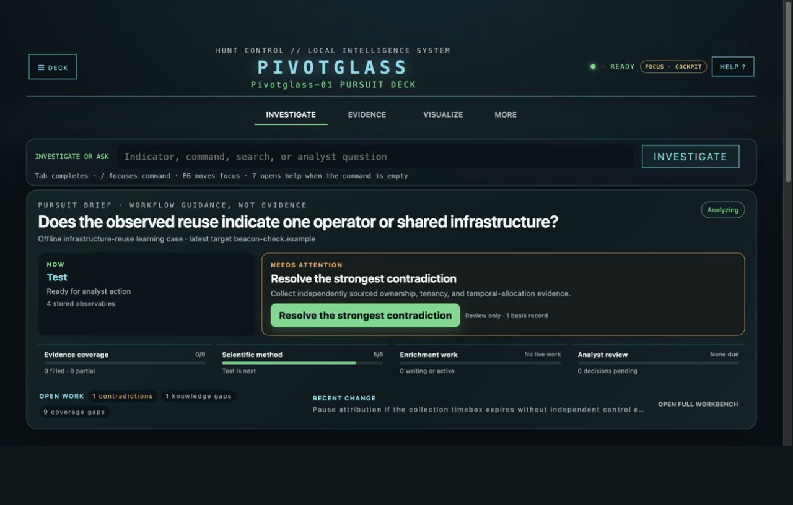
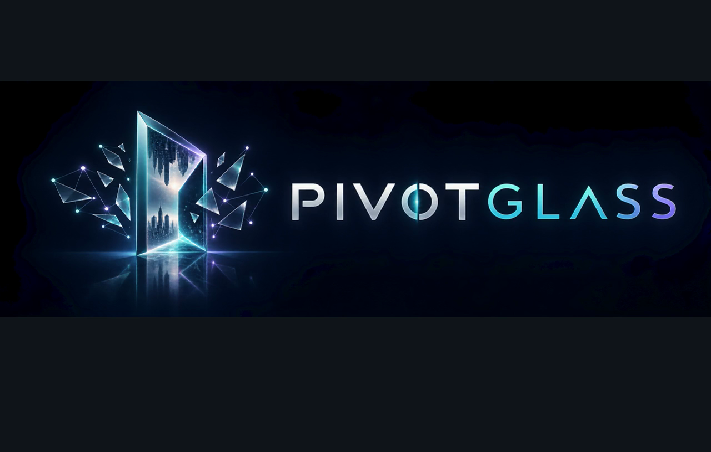

Four perspectives on Pivotglass. Actual synthetic-case UI captures, Descript narration and original procedural music.
Watch with captions · Download MP4 · Transcript · Captions


Production and analytical boundaries